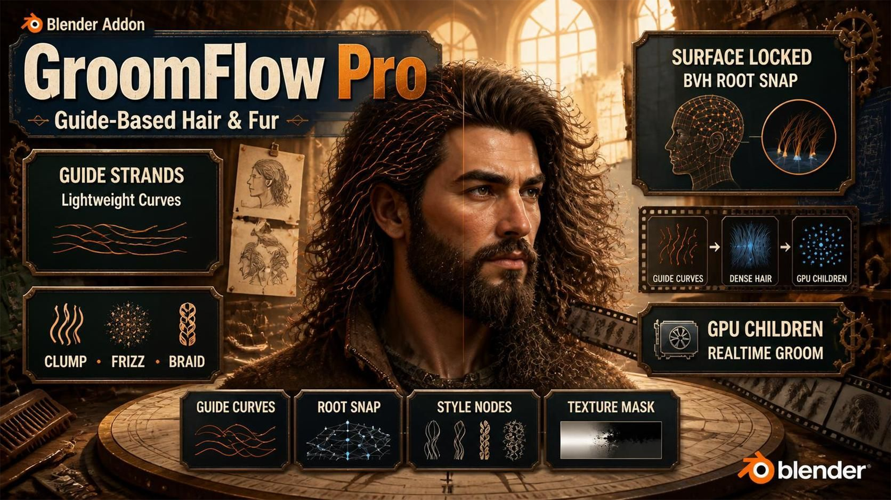
🇺🇸 English | 🇰🇷 한국어
📖 GroomFlow Pro 애드온 가이드북
- GroomFlow Pro에 오신 것을 환영합니다
- GroomFlow Pro의 공식 문서 및 사용자 가이드에 오신 것을 환영합니다.
- 이 고급 가이드 기반 헤어 시스템을 활용하여 그루밍 워크플로우를 최대화하는 방법을 알아보세요.
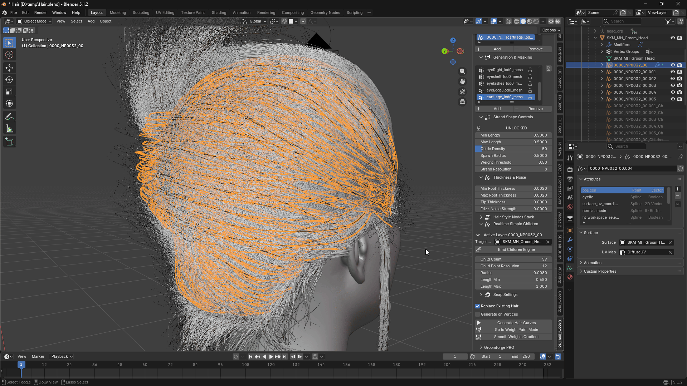
🆕 v1.6.1의 새로운 기능
- GPU 가속 Children — 약 10배 빨라졌습니다
- 실시간 Children 엔진이 이제 무거운 연산을 그래픽 카드에서 처리합니다. Children이 켜진 상태의 스컬핑, 콤빙, 시뮬레이션 재생이 눈에 띄게 부드러워집니다.
- 실측: 일반적인 그룸에서 라이브 갱신 1회가 26 ms → 2.5 ms. 차일드 포인트 100만 개가 넘는 무거운 그룸에서는 270 ms → 27 ms.
- 따로 켤 것은 없습니다. 그룸을 처음 빌드할 때 GroomFlow가 GPU를 검사하고, 결과가 정확히 일치하는 것을 확인한 뒤에만 사용합니다. 드라이버가 처리하지 못하면 조용히 CPU로 전환합니다 — 헤어는 항상 정확하며, 빠른 대신 틀리는 일은 없습니다.
- 현재 어느 쪽으로 동작 중인지 Children 패널에 표시됩니다.
- 헤어 다이나믹스 & 충돌 (Blender 5.2 이상)
- 버튼 하나로 Blender의 새 XPBD 헤어 솔버를 가이드 커브에 연결하고, 다른 버튼으로 아무 메쉬나 충돌체로 만듭니다.
- 굽힘, 감쇠, 질량, 표면 충돌, 중력 등 솔버 설정이 모두 GroomFlow 패널에 정리되어 있어, 시뮬레이션을 조정하려고 노드 에디터를 열 필요가 없습니다.
- 섹션 9. 헤어 다이나믹스 & 충돌을 참조하세요.
- Clump ID — 뷰포트 미리보기 포함
- 이제 모든 스트랜드가 자신이 속한 클럼프의 ID를 갖습니다. 생성 시점에 헤어 데이터에 직접 기록됩니다.
- GroomFlow는 각 차일드가 어느 가이드에서 나왔는지 정확히 알고 있으므로 그룹핑이 정확합니다. 이 관계를 모르는 다른 툴은 루트 위치를 뭉쳐서 추정할 수밖에 없는데, 그러면 실제 뭉치가 갈라지고 상관없는 가닥이 묶입니다.
- Clump Size로 인접한 가이드를 묶어 더 굵은 다발을 만들고, Clump Seed로 빗질을 건드리지 않고 배치만 다시 뽑습니다.
- Preview Clump IDs는 클럼프별로 스트랜드에 색을 입혀 그룹핑을 눈으로 확인시켜 줍니다.
- 섹션 10 → Clump ID를 참조하세요.
- 자동 단위 인식 — 더 이상 스케일을 짐작하지 않습니다
- GroomFlow가 캐릭터의 실제 스케일을 읽어 슬라이더 값을 변환합니다. 길이 0.5는 일반 Blender 캐릭터에서도, 센티미터로 제작된 Unreal/MetaHuman 리그에서도 같은 실제 크기가 됩니다.
- 직접 찾아서 설정해야 했던 기존 Target Base Scale 슬라이더를 대체합니다. 섹션 1. 단위 & 스케일을 참조하세요.
- Guides Inside Children — 내보낼 오브젝트가 하나로
- 가이드가 Children 오브젝트 안에 함께 들어갈 수 있습니다. Unreal이 구분할 수 있도록 표시됩니다.
- 기존에는 그룸이 두 개의 오브젝트라서 내보내면 Unreal에 그룸이 두 개로 들어오고 가닥이 나뉘었습니다. 이제 Children 오브젝트만 내보내면 그룸 전체가 하나로 도착합니다.
- 수정된 문제
- Children의 루트가 더 이상 꺾이지 않습니다. 자식 가닥이 가이드의 루트가 아니라 그 다음 점에서 시작하고 있었고, 표면 스냅이 그 점만 두피로 끌어내리면서 모든 가닥 밑동에 작은 갈고리가 생겼습니다. Child Length를 1.0보다 올리면 가려졌기 때문에 길이 문제처럼 보였습니다.
- Child Length 1.0 초과가 실제로 가이드 팁을 넘어 늘어납니다. 이전에는 팁 이후의 점들이 팁 하나에 전부 쌓여 끝부분이 접혔습니다.
- Clump Start가 이름대로 동작합니다 — 클럼핑이 시작되는 지점. 이전에는 그 지점 이전에 클럼프를 최대까지 올려서, 값이 작으면 변화 전체가 첫 한두 구간에 압축됐습니다.
- 텍스처 마스크가 고르게 분포합니다. 마스크를 샘플 배분 이후에 적용해서 검은 영역에도 샘플을 배정한 뒤 버렸기 때문에, 루트가 한쪽에 몰리고 가이드 개수를 올려야만 채워졌습니다. 이제 커버리지가 개수와 무관합니다.
- 조밀한 메시에서 텍스처 마스크가 훨씬 빨라졌습니다 — 65,000 삼각형 헤드 기준 221 ms → 87 ms.
- 두 번째 그룸을 생성해도 첫 번째 그룸이 초기화되지 않습니다. 새 웨이트 그룹을 추가하고 생성을 누르면 이전 레이어의 커브를 제자리에서 다시 만들어 — 스컬핑하고 빗질한 내용을 전부 날려버리고 — 게다가 이전 웨이트 그룹을 사용했기 때문에, 새로 칠한 그룹은 아무 일도 하지 않는 것처럼 보였습니다. 이제 다른 마스크를 대상으로 한 생성은 자기 레이어를 새로 만들고, 완성된 그룸은 건드리지 않습니다.
- Spread Along Guide가 전혀 동작하지 않던 문제. 이제 정상 동작합니다.
- Texture Mask → Mask Generate가 완료되지 못하던 문제. 수정했습니다.
- 쿼드/엔곤 메쉬에서 루트가 엉뚱한 위치에 바인딩되어 캐릭터가 변형될 때 헤어가 밀리던 문제. 수정했습니다.
- Blender 5.2에서 스타일 노드 슬라이더(Clump, Frizz, Curl…)가 동작하지 않던 문제. 수정했습니다.
- Blender 5.2에서 Add Snap이 대상 오브젝트를 설정하지 못하던 문제. 수정했습니다.
- 조밀한 헤드 메쉬에서 수십 초 걸리던 웨이트 스무딩이 거의 즉시 끝납니다.
- 스타일 노드 버튼을 누를 때 발생하던 수 초간의 멈춤이 사라졌습니다.
- 헤어 레이어 삭제 시 확인을 먼저 묻습니다 (커브 오브젝트가 함께 삭제되므로).
- 최소 지원 Blender 버전이 4.5 LTS가 되었습니다. 4.5 LTS, 5.0, 5.2 LTS, 5.3에서 검증했습니다.
🚀 주요 기능 가이드
- 가이드 기반 스트랜드 생성
- 기존 시스템의 성능 한계 없이 경량 가이드 커브 워크플로우에서 촘촘한 헤어 스트랜드를 생성합니다.
- 가이드-스트랜드 생성 파이프라인을 기반으로 하여, 아티스트가 깔끔한 가이드 커브를 디자인하면 대량의 프로덕션 품질 스트랜드가 자동으로 생성됩니다.
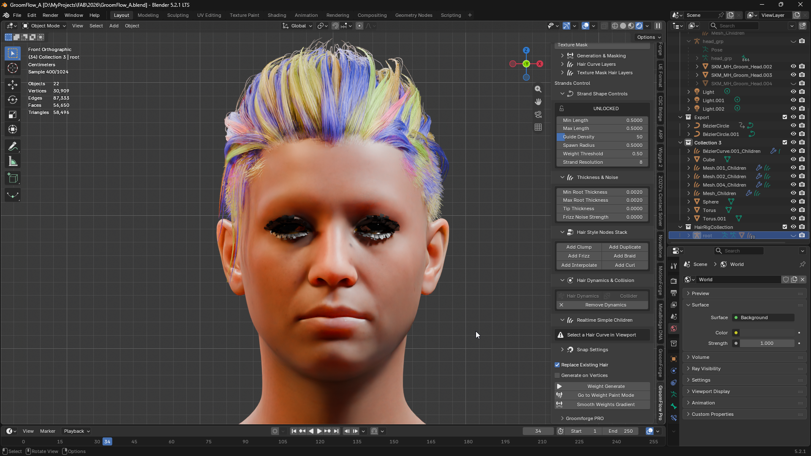
* 표면 고정 스트랜드 분포 * 기존 복제 방식에서 스트랜드가 표면 위로 떠오르거나 메쉬를 관통하는 문제, 특히 눈썹·수염·속눈썹 등 곡률이 높은 얼굴 부위에서 발생하는 문제를 해결합니다. * BVHTree 기반 표면 프로젝션 시스템을 사용하여 생성된 스트랜드 루트를 타겟 메쉬에 정확히 스냅합니다. * 모든 생성 스트랜드가 루트 부유, 갭, 관통 현상 없이 피부에 정확하게 부착됩니다.
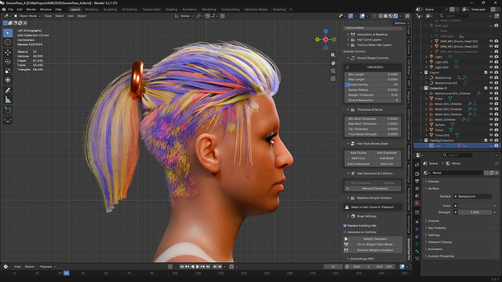
* 최적화된 프로덕션 워크플로우
* 가이드 커브와 생성된 출력 스트랜드를 완전히 분리하여 깔끔하고 비파괴적인 그루밍 워크플로우를 제공합니다. * 캐릭터 헤어, 눈썹, 얼굴 털, 퍼, 언리얼 엔진 그룸 준비 등 다양한 용도에서 간단한 Blender 네이티브 워크플로우를 유지하면서 현대적인 전문 그루밍 파이프라인을 구현합니다. * 프로덕션 중 수동 수정 작업을 최소화하면서 시각적 충실도를 극대화하도록 설계되었습니다.
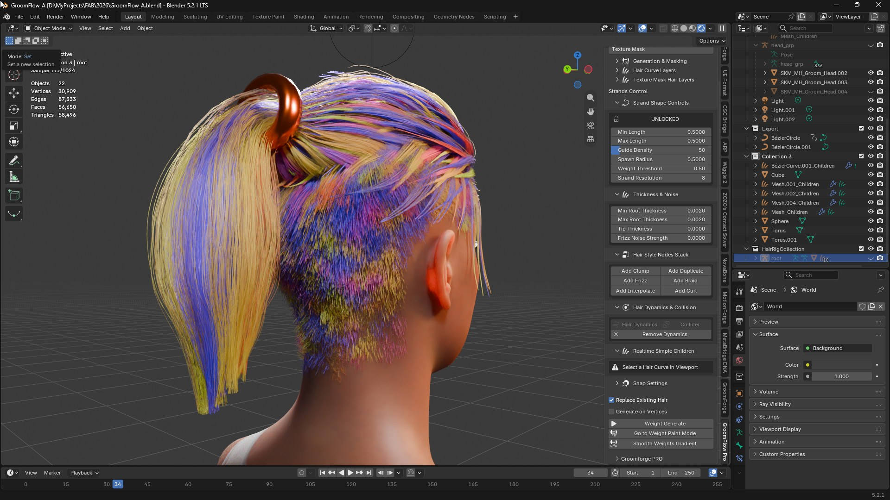
🛠 설치 가이드
워크플로우를 시작하기 전에 다음 단계에 따라 애드온을 올바르게 설정하세요.
- 다운로드
- 최신 버전의 GroomFlow_Pro 애드온 파일을 준비합니다.
- 설치
- Blender 환경 설정에서 프로그램을 설치하고 활성화합니다.
- 일반적인 Blender 애드온 설치 가이드를 따르세요.
- 필수 익스텐션 설치
- 애드온 환경 설정 내의 Extensions 메뉴로 이동합니다.
- 권장 기본 익스텐션의 'Install' 버튼을 클릭하여 전체 기능을 활성화합니다.
- 환경 설정
- 자신의 작업 환경에 맞게 옵션을 조정합니다.
1. 단위 & 스케일
GroomFlow의 모든 길이 — 스트랜드 길이, 두께, 차일드 반경 — 는 미터 기준이며, 애드온이 캐릭터가 실제로 제작된 스케일에 맞춰 변환합니다. 자동으로 처리되므로 일반적인 그룸에서는 설정할 것이 없습니다.
- 왜 필요한가
- Unreal에서 가져온 캐릭터는 센티미터로 제작된 뒤 리그가 축소하므로, 로컬 공간에서 1미터가 100 단위입니다. 이런 캐릭터에서 스트랜드 길이
0.5는 100배 짧게 나와, 헤어가 두피에 점처럼 뭉쳐 있었습니다. - GroomFlow가 캐릭터에서 실제 스케일을 직접 읽으므로, 어느 리그에서든 같은 슬라이더 값이 같은 실제 크기가 됩니다.
- Units (단위) (실시간 심플 Children 패널 안)
- Auto Detect (자동 감지) — 기본값. Target Mesh에서 스케일을 읽습니다. 특별한 이유가 없다면 그대로 두세요.
- Manual (수동) — 계수를 직접 입력합니다. 메쉬의 비균일 스케일이 단위 불일치가 아니라 의도한 것이고, 보정되기를 원하지 않을 때 사용합니다.
- 설정 아래에 감지된 값이 표시됩니다. 예:
1:1 (metres)또는100x (Unreal / MetaHuman, cm).
v1.5에서 업그레이드하셨다면: 기존 Target Base Scale 슬라이더는 삭제되었습니다. 이 기능이 대체하며 입력이 필요 없습니다. 스케일이 다른 캐릭터를 보정하려고
1.0이 아닌 값을 넣어 쓰셨다면, 이제 그 보정이 자동으로 처리됩니다.
2. 마스킹 방법
헤어 생성 전에 사용할 마스킹 모드를 선택합니다. 두 모드는 완전히 독립적이며 각각 별도의 레이어 목록을 유지합니다.
- Vertex Weight (버텍스 웨이트)
- 메쉬에 페인팅된 버텍스 그룹을 사용하여 헤어가 자라는 위치와 길이를 제어합니다.
- 빨간 영역은 전체 길이의 헤어, 파란 영역은 짧은 헤어 또는 헤어 없음으로 설정합니다.
- 두피 헤어, 눈썹, 수염 영역 등 유기적인 형태에 적합합니다.
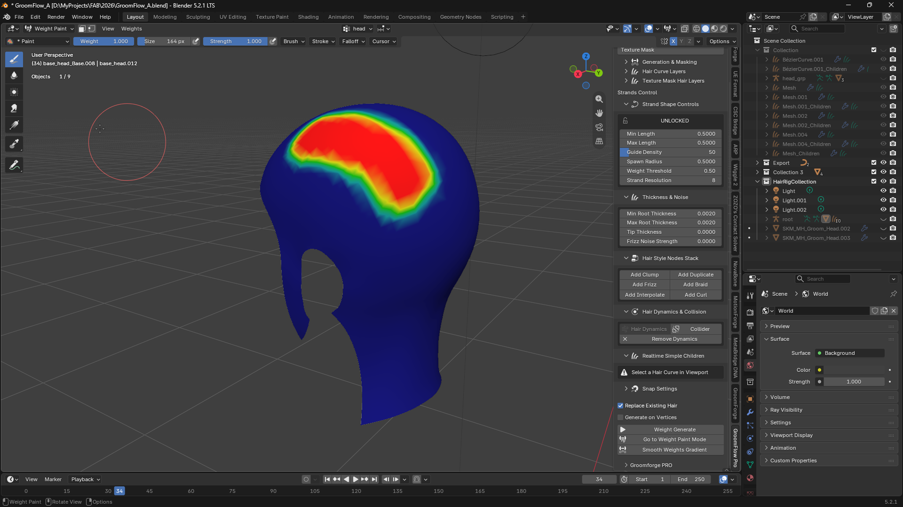
* Texture Mask (텍스처 마스크)
* 페인팅된 이미지 텍스처를 사용하여 헤어 성장 영역과 밀도를 정의합니다.
* 각 레이어에는 고유한 텍스처 이미지가 있어 여러 독립적인 헤어 영역을 개별적으로 관리할 수 있습니다.
* 퍼 패턴이나 스타일화된 헤어 존 등 UV 기반의 정밀한 헤어 배치 제어에 적합합니다.
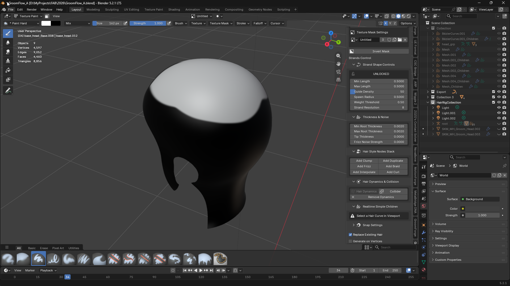
3. 생성 및 마스킹 패널
이 접을 수 있는 패널에는 Vertex Weight 모드 사용 시 버텍스 그룹 목록이 포함됩니다.
- 메쉬를 선택하면 해당 메쉬의 버텍스 그룹 목록이 표시됩니다.
- Add / Remove 버튼을 사용하여 버텍스 웨이트 그룹을 생성하거나 삭제합니다.
- 목록 상단의 Lock 버튼은 실수로 인한 웨이트 변경을 방지합니다.
- Texture Mask 모드에서는 아래의 Texture Mask Hair Layers 섹션으로 안내합니다.
4. 헤어 커브 레이어
Hair Curve Layers 패널은 Vertex Weight 모드에서 생성된 헤어 오브젝트 목록을 관리합니다.
- 목록의 각 항목은 버텍스 그룹 마스크에 연결된 하나의 생성된 헤어 커브 오브젝트를 나타냅니다.
- Up / Down 화살표를 사용하여 스택의 레이어 순서를 변경합니다.
- Add로 새 빈 슬롯을 생성하거나, Remove로 선택된 레이어 항목을 삭제합니다.
- 목록에서 레이어를 클릭하면 뷰포트에서 해당 헤어 커브가 자동으로 활성화됩니다.
5. 텍스처 마스크 헤어 레이어
이 패널은 Texture Mask 모드로 생성된 헤어 레이어를 관리합니다. Vertex Weight 레이어 목록과 독립적으로 작동합니다.
- 각 항목은 특정 텍스처 이미지로 구동되는 하나의 헤어 커브 오브젝트를 나타냅니다.
- Add는 새 빈 텍스처 레이어 슬롯을 생성합니다. 슬롯이 활성화되어 생성된 헤어 오브젝트를 받을 준비가 됩니다.
- Remove는 선택된 텍스처 레이어 슬롯을 삭제합니다.
- Texture Mask Settings — 현재 활성화된 텍스처 레이어의 이미지 선택기를 표시합니다. 생성 전에 여기서 마스크 이미지를 할당하거나 생성합니다.
- Invert Mask — 활성 마스크 이미지의 밝기 값을 반전시켜 헤어가 자라는 영역을 뒤집습니다.
텍스처 마스크 워크플로우 (단계별)
- 마스킹 방법을 Texture Mask로 전환합니다.
- Texture Mask Hair Layers 패널을 엽니다.
- Add를 눌러 새 레이어 슬롯을 생성합니다.
- Texture Mask Settings 영역에서 이 레이어에 마스크 이미지를 할당하거나 생성합니다.
- Go to Texture Paint Mode를 눌러 메쉬에 직접 마스크를 페인팅합니다.
- Object Mode로 돌아와 Mask Generate를 눌러 헤어 커브를 생성합니다.
- 3단계부터 반복하여 독립적으로 마스킹된 헤어 레이어를 추가합니다.
각 레이어는 생성 전에 고유한 이미지가 할당되어 있어야 합니다. 이미지 없이 생성하면 기존의 이름 없는 이미지를 사용하거나 경고가 표시됩니다.
6. 스트랜드 형태 제어
이 설정들은 생성된 헤어 스트랜드의 형태와 분포를 제어합니다. 헤어 커브 레이어가 활성화된 상태에서 값을 변경하면 해당 레이어가 실시간으로 자동 재생성됩니다.
- Lock / Unlock (잠금 / 잠금 해제)
- 그루밍이 완료된 후 실수로 인한 변경을 방지하기 위해 스트랜드 컨트롤을 잠급니다.
- 스컬핑에 들어가기 전에 항상 잠금을 설정하여 파라미터 변경으로 인한 덮어쓰기를 방지하세요.
- Min Length (최소 길이)
- 낮은 웨이트 영역에서 자라는 헤어의 최소 길이를 설정합니다.
- 이 값을 높이면 희박한 영역에서도 더 긴 스트랜드가 생성됩니다.
- Max Length (최대 길이)
- 완전히 웨이팅된 (빨간) 영역에서 자라는 헤어의 최대 길이를 설정합니다.
- 가장 밀도 높은 그루밍 영역의 주요 길이 제어 값입니다.
- Guide Density (가이드 밀도)
- 표면에 생성되는 헤어 가이드 커브의 총 수를 제어합니다.
- 숫자가 높을수록 더 촘촘한 커버리지를 생성합니다. 디자인 중에는 낮게, 최종 출력 시에는 높게 설정하세요.
- Spawn Radius (생성 반경)
- 각 생성된 헤어 루트가 메쉬 표면 샘플 포인트에서 무작위로 오프셋될 수 있는 거리를 제어합니다.
- 0.0에서는 루트가 표면에 정확히 스냅됩니다. 값을 높이면 루트가 더 넓은 영역으로 퍼집니다.
- Weight Threshold (웨이트 임계값)
- 헤어를 생성하기 위해 메쉬의 포인트에 필요한 최소 웨이트 값을 설정합니다.
- 높이면 낮은 웨이트 영역의 헤어가 잘립니다. 0.01 이하로 낮추면 웨이트를 무시하고 균일하게 생성합니다.
- Strand Resolution (스트랜드 해상도)
- 단일 헤어 스트랜드를 구성하는 컨트롤 포인트의 수를 지정합니다.
- 값이 높을수록 더 부드럽고 유연한 커브가 생성되지만 메모리와 뷰포트 부하가 증가합니다.
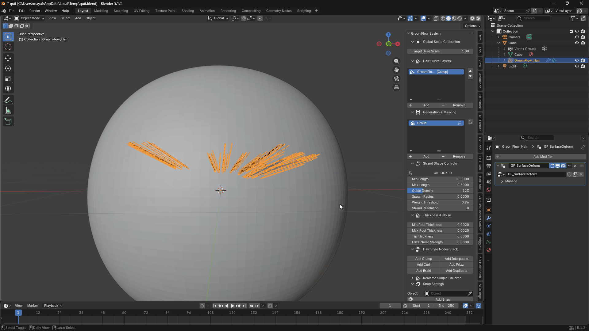
Warning
- 수동으로 스컬핑한 커브의 프로퍼티를 절대 수정하지 마세요
- Strand Shape 값을 변경하면 헤어가 완전히 재생성되어 모든 스컬핑 편집이 덮어씌워집니다.
- Sculpt Mode에 진입하기 전에 항상 Lock 버튼을 사용하여 실수로 인한 덮어쓰기를 방지하세요.
7. 두께 및 노이즈 설정
- Min Root Thickness (최소 루트 두께)
- 낮은 웨이트 영역에 적용되는 생성 스트랜드 루트 영역의 최소 두께를 설정합니다.
- Max Root Thickness (최대 루트 두께)
- 높은 웨이트 영역에 적용되는 생성 스트랜드 루트 영역의 최대 두께를 설정합니다.
- Tip Thickness (팁 두께)
- 각 스트랜드 끝부분의 두께를 제어합니다. 자연스러운 테이퍼 효과를 위해 0.0에 가깝게 설정합니다.
- Frizz Noise Strength (프리즈 노이즈 강도)
- 각 스트랜드에 무작위 방향 노이즈를 추가하여 자연스럽게 헝클어지거나 곱슬거리는 외형을 만듭니다.
- 값이 높을수록 더 혼란스럽고 불규칙한 실루엣이 생성됩니다.
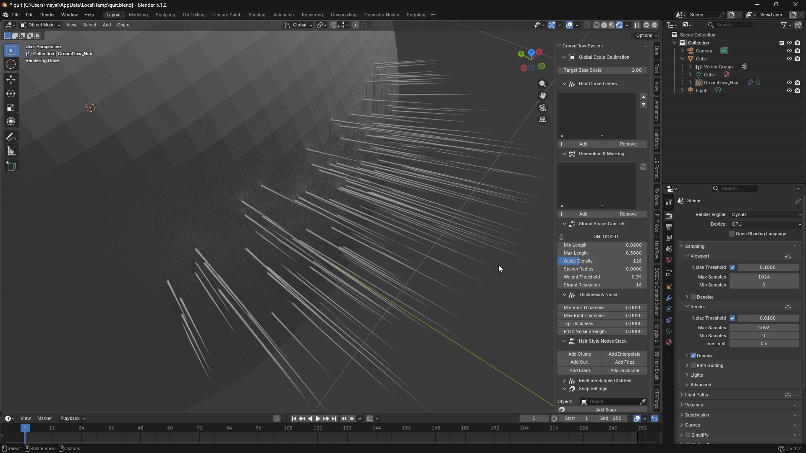
8. 헤어 스타일 노드 스택
활성 헤어 커브에 Blender 지오메트리 노드 모디파이어를 연결하여 최종 외형을 형성합니다. 각 버튼은 Blender의 내장 Hair Essentials 라이브러리에서 해당 노드 그룹을 불러옵니다.
- Add Clump (클럼프 추가)
- 스트랜드 그룹을 공통 클러스터 포인트 방향으로 당겨 자연스러운 헤어 클럼핑을 만듭니다.
- Add Frizz (프리즈 추가)
- 개별 스트랜드에 고주파 노이즈 분열을 추가하여 자연스럽게 거칠거나 곱슬거리는 텍스처를 만듭니다.
- Add Interpolate (인터폴레이트 추가)
- 기존 가이드 사이에 추가 스트랜드를 채워 눈에 띄는 밀도를 크게 높입니다.
- Add Duplicate (복제 추가)
- 각 스트랜드의 오프셋 복사본을 흩뿌려 새 가이드를 추가하지 않고도 빠르게 볼륨을 키웁니다.
- Add Braid (브레이드 추가)
- 스타일화된 땋은 머리나 꼬임 효과를 위해 스트랜드를 땋인 로프 패턴으로 엮습니다.
- Add Curl (컬 추가)
- 곱슬거리거나 웨이브 헤어스타일을 위해 각 스트랜드의 길이를 따라 나선형 컬 변형을 적용합니다.
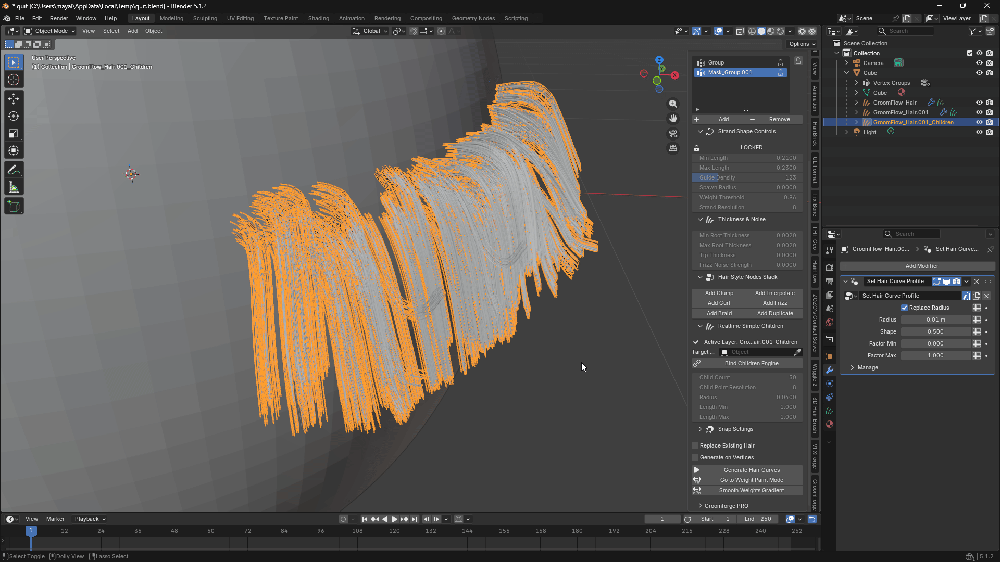
9. 헤어 다이나믹스 & 충돌
Blender 5.2 이상이 필요합니다. 이전 버전에서는 패널에 안내가 표시되고 버튼이 비활성화됩니다.
Blender 5.2에 헤어용 XPBD 물리 솔버가 새로 들어왔습니다. 이 패널이 그 연결을 대신 해주고, 설정을 손닿는 곳에 꺼내 놓습니다. 그렇지 않으면 값 하나 바꿀 때마다 노드 에디터를 열고 노드 그룹 안으로 들어가야 합니다.
버튼
- Hair Dynamics
- 가이드 커브를 선택하고 누릅니다. 솔버가 연결되고, 헤어가 붙어 있는 메쉬와 충돌하도록 설정됩니다.
- 타임라인의 재생을 누르면 시뮬레이션이 보입니다.
- Collider (충돌체)
- 헤어가 부딪혀야 할 메쉬 — 몸통, 어깨, 모자 등 — 를 선택하고 누릅니다.
- 두피 자체는 충돌체로 만들 필요가 없습니다. 아래의 Surface Collision이 이미 처리합니다.
- Remove Dynamics
- 선택한 오브젝트에서 다이나믹스와 충돌체 설정을 제거합니다.
설정
Hair Dynamics를 추가하면 나타나며, 값을 바꾸면 시뮬레이션에 바로 반영됩니다.
- Physics (물리)
- 켜면 솔버가 시뮬레이션합니다. 끄면 시뮬레이션 없이 애니메이션만 따라갑니다.
- Solver (솔버) — Substeps, Constraint Steps
- 헤어가 몸을 뚫고 지나가거나 빠른 움직임에서 늘어나면 값을 올리세요. 높을수록 연산 비용이 큽니다.
- Structure (구조)
- Bendiness — 스트랜드가 얼마나 자유롭게 휘는지. 낮으면 뻣뻣한 머리, 높으면 부드러운 머리.
- Root Bendiness — 두피와 만나는 지점에서 허용되는 휨 정도.
- Stretchiness — 스트랜드가 늘어날 수 있는 정도. 헤어에서는 0에 가깝게 두세요.
- Mass, Friction — 무게, 그리고 가닥끼리 끌리는 정도.
- Linear Damping — 헤어가 떨리면 올리세요.
- Angular Damping — 헤어가 너무 심하게 휘둘리면 올리세요.
- Collision (충돌)
- Surface Collision — 헤어가 자라난 메쉬를 뚫지 않게 합니다.
- Deforming Surface — 그 메쉬가 리깅되어 있거나 애니메이션될 때 체크하세요.
- Surface Friction — 헤어가 그 위를 미끄러지는 정도.
- Gravity — 헤어가 아래로 떨어집니다. 스타일라이즈드나 무중력 표현에서는 끄세요.
권장 워크플로우
- 가이드 커브의 형태를 먼저 잡으세요. 다이나믹스는 주어진 형태를 그대로 시뮬레이션합니다.
- 가이드 커브 선택 → Hair Dynamics.
- 몸통 메쉬 선택 → Collider.
- 타임라인을 재생해 확인합니다. 헤어가 몸을 뚫으면 Substeps를, 떨리면 Linear Damping을 올리세요.
- 미리보기 중에는 Live OFF로 두세요. 시뮬레이션되는 가이드를 Children이 알아서 따라갑니다 (다음 섹션의 패시브 팔로우 참조).
10. 실시간 심플 Children
Children 시스템은 각 가이드 커브 주변에 짧고 자연스럽게 분포된 차일드 스트랜드 군집을 생성합니다. Children은 두 가지 방식으로 가이드와 동기화를 유지합니다. 항상 작동하는 경량 팔로우와 선택적 정밀 실시간 재계산을 통해, 항상 최대 성능 비용을 지불하지 않고도 실시간 피드백을 얻을 수 있습니다.
v1.6.0부터 실시간 재계산이 그래픽 카드에서 실행되어 이전보다 약 10배 빠릅니다. 패널 상단의 상태 줄이 현재 어느 쪽으로 동작하는지 알려줍니다.
GPU: OPENGL / <그래픽 카드 이름>— 고속 경로로 동작 중입니다.GPU: unavailable - using CPU— GPU를 검사했으나 결과가 일치하지 않아 CPU로 전환했습니다. 그룸은 여전히 정확하며, 속도만 느립니다.
이 패널을 사용하려면 뷰포트에서 헤어 커브 오브젝트를 선택하세요. 패널에 활성 레이어 이름과 설정이 표시됩니다.
설정
- Active Layer (활성 레이어)
- Children을 받는 현재 선택된 가이드 커브의 이름을 표시합니다.
- Target Mesh (타겟 메쉬)
- 이 가이드 커브가 부착된 바디 또는 스캘프 메쉬를 선택합니다.
- 아이드로퍼를 사용하여 뷰포트에서 직접 메쉬를 선택합니다.
- Children을 빌드하기 전에 반드시 설정해야 합니다.
버튼
- Build Children (Children 빌드)
- 현재 활성 가이드 커브에 대한 Children을 생성하거나 재생성합니다.
- 씬에 모든 차일드 스트랜드가 포함된
{CurveName}_Children오브젝트를 생성하며, 이미 Target Mesh에 표면 고정됩니다. - 또한 Children이 가이드의 현재 동작을 따라가도록 유지하는 경량 팔로우 모디파이어를 연결합니다. 아래의 Passive Follow를 참조하세요.
- 가이드 커브당 한 번 누릅니다. Child Count, Radius, Clump, Root Distribution 설정이 변경되면 다시 누릅니다.
- 각 가이드 커브에는 독립적인 Children 오브젝트가 있습니다.
- Live OFF / Live ON (토글)
- 스컬핑이나 콤빙 작업 중 사용하는 정밀 실시간 재계산 엔진을 토글합니다.
- Live ON — 가이드가 변경될 때마다 클럼프, 트위스트, 루트 스캐터가 완전히 재계산됩니다. 스컬핑 도구로 그루밍을 적극적으로 형성하는 동안 사용하세요.
- Live OFF — 재계산 엔진이 중지됩니다. 하지만 Children이 고정되지는 않습니다. 아래를 참조하세요.
- Live 엔진은 모든 가이드 커브에 걸쳐 공유됩니다. 그루밍 중에 켜고, 형태 작업이 끝나고 모션이나 시뮬레이션만 미리 보려면 끄세요.
Passive Follow — Live OFF에서도 Children이 계속 움직임
Build Children이 실행될 때마다 소형 지오메트리 노드 모디파이어(GF_ChildrenGuideFollow)가 Children 오브젝트에 연결됩니다. Blender의 디펜던시 그래프에서 직접 가이드의 현재 위치를 읽어 Children을 이에 맞게 오프셋합니다. 이 과정에서 Python 코드가 실행되지 않으므로 사실상 추가 비용이 없습니다.
즉, 가이드 커브에 Blender의 기본 Hair Dynamics 시뮬레이션을 켜거나 캐릭터가 포즈를 취하는 애니메이션을 재생하면, Live OFF 상태에서도 Children이 함께 움직입니다. 이것이 시뮬레이션이나 애니메이션을 미리 보는 의도된 방식입니다. Live OFF 상태에서 Passive Follow가 모션을 전달하도록 두고, 클럼프/트위스트 디테일을 손으로 다시 형성하려고 할 때만 Live ON으로 전환하세요.
Passive Follow는 각 차일드 스트랜드를 가이드 루트와 함께 단단하게 이동시킵니다. 클럼프/트위스트 수식을 재실행하지는 않습니다. 그것은 Live ON을 사용하세요.
여러 가이드 커브를 위한 권장 워크플로우
- 가이드 커브 1 선택 → Target Mesh 설정 → Build Children 누르기.
- 가이드 커브 2 선택 → Target Mesh 설정 → Build Children 누르기.
- 모든 가이드 커브에 대해 계속합니다.
- 그루밍을 적극적으로 형성하는 동안 Live ON 누르기 — 스컬핑하는 동안 클럼프/트위스트가 실시간으로 재계산됩니다.
- 형태 작업이 끝나면 Live OFF 누르기. Children이 유지되며, 나중에 가이드가 시뮬레이션되거나 애니메이션될 경우 Passive Follow가 연결을 유지합니다.
중요: Build Children과 Live 엔진은 별개의 작업입니다. 먼저 모든 커브에 대해 Children을 빌드한 다음 Live를 한 번 활성화할 수 있습니다. 커브마다 엔진을 켜고 끌 필요가 없습니다.
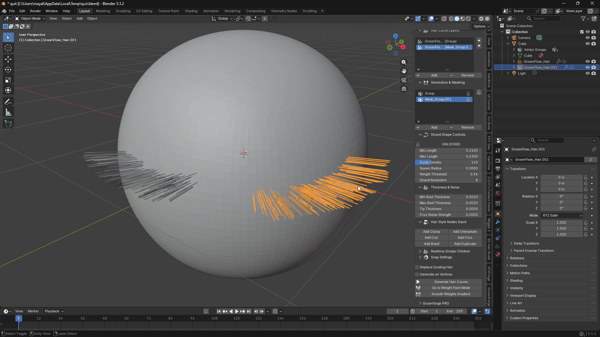
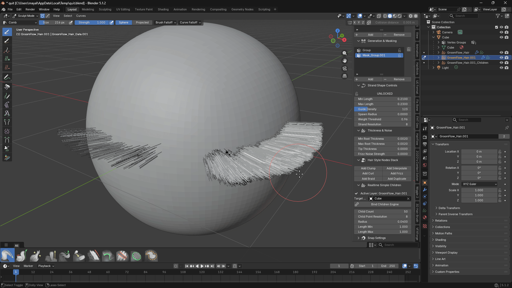
차일드 스트랜드 설정
- Child Count (차일드 수)
- 가이드 커브당 생성되는 차일드 스트랜드의 수입니다.
- 값이 높을수록 더 촘촘한 헤어 볼륨이 생성됩니다. 뷰포트 성능과 균형을 맞추세요.
- Child Point Resolution (차일드 포인트 해상도)
- 차일드 스트랜드당 컨트롤 포인트의 수입니다. 값이 높을수록 더 부드러운 커브가 됩니다.
- Units (단위)
- 아래의 길이 값들을 캐릭터 스케일로 변환하는 방식입니다. Auto Detect로 두세요 — 섹션 1. 단위 & 스케일 참조.
- Guides Inside Children (가이드를 Children 안에 포함)
- 기본 켜짐. 가이드 커브가 Children 오브젝트 안에도 함께 들어가며, Unreal이 가이드를 구분할 수 있도록 표시됩니다.
- 덕분에 Children 오브젝트만 내보내도 가이드를 포함한 그룸 전체가 Unreal에 하나의 에셋으로 도착합니다. 끄면 가이드와 Children이 별개 오브젝트로 남아 그룸을 두 번 내보내야 합니다.
- Radius (반경)
- 차일드 루트가 분포되는 가이드 루트 주변의 퍼짐 반경입니다.
- 값이 작으면 Children이 촘촘하게 모이고, 크면 넓게 퍼집니다.
- Length Min (최소 길이)
- 부모 가이드에 대한 차일드 스트랜드의 최소 길이 비율입니다. 1.0 이하의 값은 자연스럽게 다양한 짧은 헤어를 만듭니다.
- Length Max (최대 길이)
- 부모 가이드에 대한 최대 길이 비율입니다. 1.0 이상의 값은 일부 Children이 가이드 팁을 넘어 늘어날 수 있게 합니다.
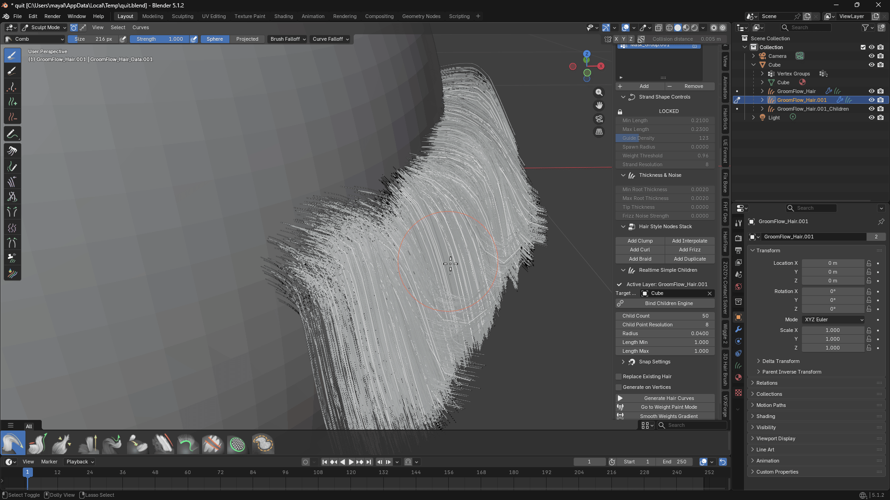
클럼프 설정
차일드 스트랜드가 가이드 커브의 팁 방향으로 당겨져 자연스러운 헤어 클럼프를 형성하는 방법을 제어합니다.
- Clump — 가이드 팁을 향한 클럼핑 당김의 전체적인 강도입니다.
- Clump Start — 클럼핑이 시작되는 스트랜드의 지점입니다 (0 = 루트, 1 = 팁). 이 지점 이전에는 Children이 완전히 벌어진 상태로 유지됩니다.
- Clump Shape — Clump Start부터 팁까지 클럼핑이 들어오는 방식입니다. 값이 낮으면 일찍 모이고, 높으면 오래 벌어져 있다가 팁 근처에서 모입니다.
- Clump Noise — 균일한 클럼핑 패턴을 깨기 위해 스트랜드별 무작위 변형을 추가합니다.
- Clump Twist — 차일드 스트랜드가 클럼핑되면서 가이드 축 주위를 회전하여 나선형 감싸기 효과를 만듭니다. 음수 값은 반대 방향으로 꼬입니다.
- Clump Offset — 스트랜드가 모이는 지점을 가이드 팁에서 벗어나도록 이동시킵니다.
v1.6.0에서 변경: Clump Start는 원래 그 지점에서 시작하는 게 아니라 그 지점까지 클럼핑을 최대로 올리고 있었습니다. 그래서 전환 전체가 첫 한두 구간에 압축되어 루트에 눈에 띄는 갈고리가 생겼습니다. 이제 위 설명대로 동작합니다. Clump Start를 0보다 크게 저장해 둔 그룸은 이전보다 약간 느슨해 보이므로, Clump 값을 조금 올려 맞추시면 됩니다.
루트 분포 설정
가이드 루트에 대한 차일드 스트랜드 루트의 배치 위치를 제어합니다.
- Root Spread — 가이드 루트 주변에서 Children이 흩뿌려지는 디스크 영역의 반경입니다. 0.0에서는 모든 Children이 정확히 가이드 루트에서 시작합니다.
- Spread Along Guide — Root Spread가 0보다 클 때, 흩뿌림을 균일한 원이 아니라 가이드가 누운 방향으로 늘립니다. 두피에 눕혀 빗은 머리에 사용하세요.
- Root Seed — 차일드 루트 배치 패턴의 랜덤 시드입니다. 다른 설정을 변경하지 않고 다른 배열을 얻으려면 이 값을 변경하세요.
v1.6.0에서 수정: Spread Along Guide는 이전까지 어떤 값을 넣어도 전혀 동작하지 않았습니다. 이제 설명대로 작동합니다.
Clump ID
모든 스트랜드가 자신이 속한 클럼프의 ID를 갖고 있으며, 헤어 데이터 자체에 clumpid로 저장됩니다. Unreal을 비롯한 그룸 툴이 이 값을 읽어 한 다발의 머리카락을 셰이딩과 시뮬레이션에서 함께 다룹니다.
GroomFlow는 각 차일드가 어느 가이드에서 나왔는지 정확히 알고 있으므로 클럼프 그룹핑이 정확합니다. 이 관계를 모르는 툴은 루트 위치를 뭉쳐서 추정할 수밖에 없고, 그러면 실제 다발이 갈라지고 상관없는 가닥이 묶입니다.
- Clump Size (클럼프 크기)
- 인접한 가이드 몇 개가 하나의 클럼프를 공유할지 정합니다.
- 기본값
1에서는 가이드 하나가 곧 클럼프 하나입니다. 값을 올리면 가까운 가이드끼리 묶여 더 크고 굵은 다발이 됩니다. - 만들어진 순서가 아니라 머리에서 실제로 놓인 위치를 기준으로 묶으므로, 클럼프는 항상 실제 다발이 됩니다.
- Clump Seed (클럼프 시드)
- 어떤 가이드가 어느 클럼프에 들어갈지 다시 뽑습니다. 클럼프 개수는 그대로입니다.
- 그룸을 다시 생성하지 않습니다. 빗질, 스컬핑, 모든 스트랜드 위치가 그대로 유지되고 그룹핑만 바뀌므로, 완성된 그룸에서도 마음껏 배치를 바꿔볼 수 있습니다.
- Preview Clump IDs (클럼프 ID 미리보기) (토글)
- 클럼프별로 스트랜드에 색을 입히고 뷰포트를 Material Preview로 전환해 눈으로 확인시켜 줍니다.
- 다시 누르면 꺼집니다. 미리보기 색상, 머티리얼, 뷰포트 셰이딩이 모두 원래대로 복구되며 클럼프 데이터 자체는 그대로 남습니다.
11. 생성 옵션
- Replace Existing Hair (기존 헤어 교체)
- 활성화하면 헤어 생성 시 현재 활성 레이어의 커브를 덮어씁니다.
- 비활성화하면 각 생성 시 기존 레이어 위에 완전히 새로운 레이어가 생성됩니다.
- 중복 오브젝트가 쌓이지 않도록 일반적인 그루밍 중에는 이 옵션을 활성화된 상태로 두세요.
* Generate on Vertices (버텍스에 생성)
* 면 표면 대신 메쉬 버텍스에 정확하게 헤어 가이드 커브 루트를 스냅하고 생성합니다.
* 로우폴리 에셋이나 루트가 메쉬 토폴로지와 정확히 일치해야 하는 그루밍에 유용합니다.
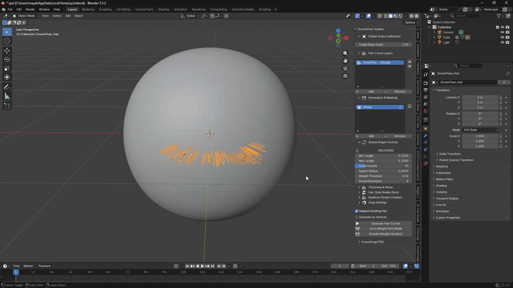
12. 프로세스 제어 버튼
Vertex Weight 모드
- Weight Generate (웨이트 생성)
- 활성 버텍스 웨이트 그룹을 마스크로 사용하여 헤어 생성 알고리즘을 실행합니다.
- 페인팅된 웨이트 값에 따라 메쉬 표면에 직접 헤어 스트랜드를 생성합니다.
- 빨간 영역은 전체 길이의 헤어, 낮은 웨이트 영역은 짧거나 헤어 없음을 생성합니다.
- Go to Weight Paint Mode (웨이트 페인트 모드로 이동)
- 직접 버텍스 웨이트 편집을 위해 활성 메쉬를 Weight Paint Mode로 전환합니다.
- 촘촘하고 전체 길이의 헤어는 빨간색(웨이트 1.0), 헤어를 억제하려면 파란색(웨이트 0.0)으로 페인팅합니다.
- Smooth Weights Gradient (웨이트 그라디언트 스무스)
- 활성 웨이트 맵의 날카로운 전환을 부드러운 그라디언트로 완화합니다.
- 페인팅된 영역과 페인팅되지 않은 영역의 경계에서 갑작스러운 길이 변화를 방지합니다.
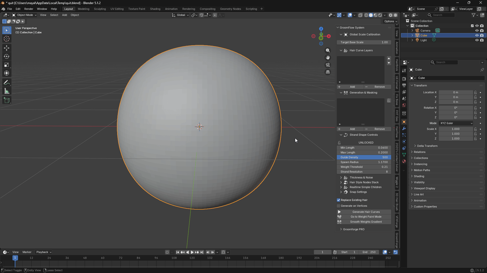
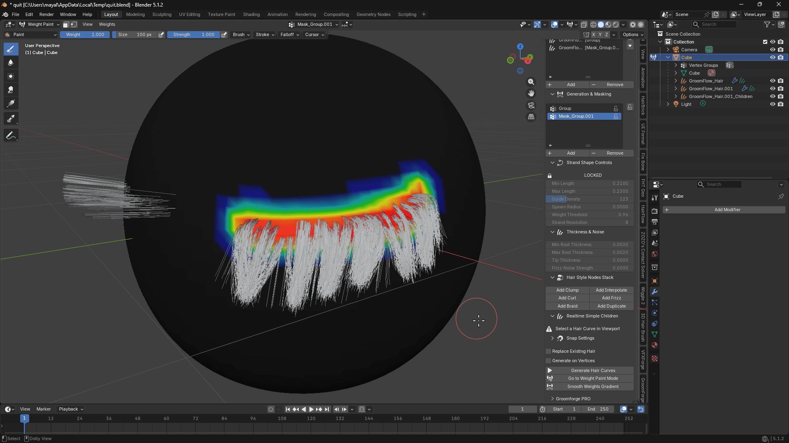
Texture Mask 모드
- Mask Generate (마스크 생성)
- 활성 텍스처 레이어의 이미지를 마스크로 사용하여 헤어를 생성합니다.
- 이미지의 밝은(흰색) 영역은 헤어를 생성하고, 어두운(검정) 영역은 헤어를 억제합니다.
- Go to Texture Paint Mode (텍스처 페인트 모드로 이동)
- 활성 마스크 이미지가 미리 선택된 상태로 활성 메쉬를 Texture Paint Mode로 전환합니다.
- 헤어를 추가하려면 흰색으로, 제거하려면 검정으로 페인팅합니다.
13. 스냅 설정
- Add Snap (스냅 추가)
- 활성 헤어 커브에 지오메트리 노드 기반 정밀 스냅 시스템을 적용합니다.
- 메쉬가 변형될 때(셰이프 키, 시뮬레이션 등)에도 헤어 루트를 메쉬 표면에 고정하여 부유나 관통을 방지합니다.
- 헤어 커브가 선택되어 있어야 합니다. 먼저 Children 패널에서 Target Mesh를 설정해야 합니다.
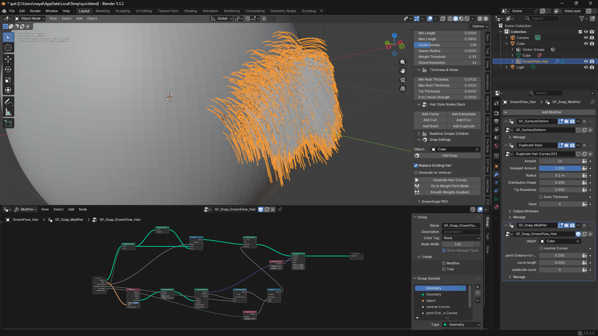
14. 언리얼 엔진 파이프라인 및 Expert Synergy 워크플로우
에셋 데이터 블록을 마무리하고 시네마틱 익스포트 통합을 위해 그룸을 준비합니다.
* 스케일 — 이제 자동으로 처리됩니다
* Blender와 언리얼은 월드 스케일을 다르게 다루며, 임포트한 헤어가 거대한 시트로 폭발하거나 미세한 핀으로 축소되는 이유가 여기에 있습니다.
* v1.6.0부터 보정할 것이 없습니다. GroomFlow가 캐릭터에서 실제 스케일을 읽어, 미터 기준 Blender 캐릭터에서도 센티미터로 제작된 Unreal/MetaHuman 리그에서도 올바른 크기로 그룸을 만듭니다. 섹션 1. 단위 & 스케일 참조.
* 캐릭터에 의도적인 비균일 스케일이 있어 그대로 유지하고 싶다면, Units를 Manual로 바꾸고 계수를 직접 입력하세요.
* Children 오브젝트만 내보내기
* Guides Inside Children을 켠 채로 두세요. 가이드가 Children 오브젝트 안에 가이드로 표시된 채 함께 들어가므로, 언리얼이 반쪽짜리 그룸 두 개가 아니라 완전한 그룸 하나를 받습니다.
* 스트랜드는 Clump ID와 자신이 속한 가이드 정보도 함께 갖고 갑니다. 덕분에 언리얼의 클럼프 기반 셰이딩과 시뮬레이션이 다시 추정한 근사값이 아니라 GroomFlow가 실제로 사용한 그룹핑을 그대로 쓰게 됩니다.
* Professional GroomForge Pro Synergy
* 서로 다른 소프트웨어 공간 간의 월드 행렬 불일치로 인해 헤어 메쉬 익스포트가 까다로울 수 있습니다.
* 완벽한 행렬 동기화:
* GroomForge Pro 애드온과 함께 사용하면, 분리된 가이드와 차일드 스트랜드 레이어가 모든 변환 변환 문제를 완전히 우회합니다.
* 수동 재배치 없이 언리얼 엔진의 기본 Groom 에셋 시스템으로 100% 완벽하게 자동화된 임포트 레이아웃을 보장합니다.
* 성능 팁 (해상도 관리)
* 촘촘한 헤어 그룸 작업 중 전문적인 수준의 뷰포트 반응성을 유지하기 위해 설정을 동적으로 최적화합니다.
* 실시간 효율:
* 대규모 헤어스타일 디자인 중에는 Strand Resolution을 4 또는 6으로 낮춰 뷰포트 FPS를 최대화합니다.
* Cycles에서 최종 프레임을 렌더링하거나 언리얼 엔진으로 그룸을 익스포트하기 직전에 12로 높이세요.